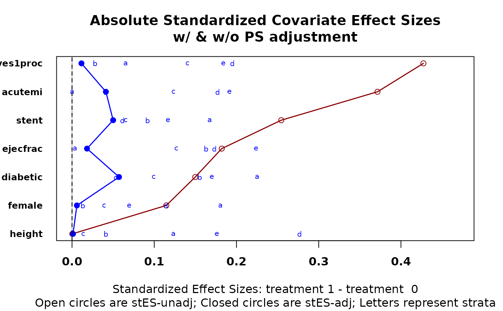
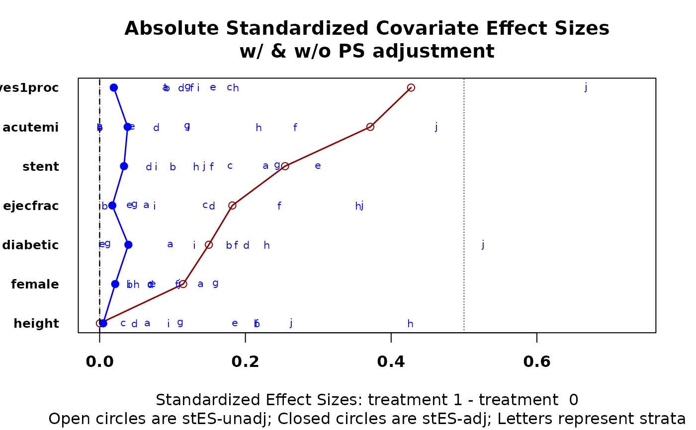
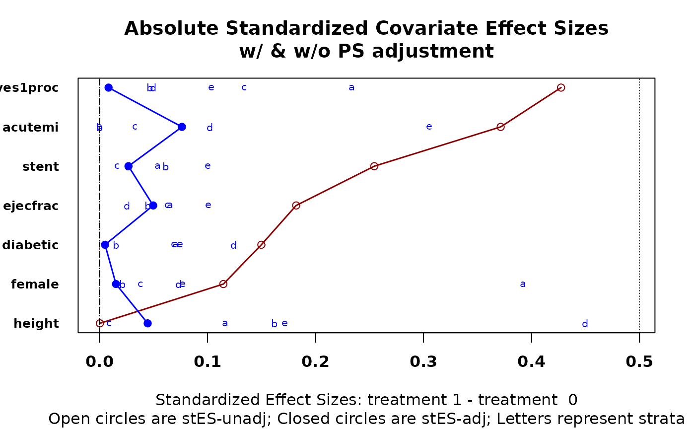

Provides a graphic that depicts covarite effect size differences between treatment groups both before and after stratification. Function will create stata internally if desired, and returns numerical output used to create graphic.
cv.bal.psa(
covariates,
treatment,
propensity,
strata = NULL,
int = NULL,
tree = FALSE,
minsize = 2,
universal.psd = TRUE,
trM = 0,
absolute.es = TRUE,
trt.value = NULL,
use.trt.var = FALSE,
verbose = FALSE,
xlim = NULL,
plot.strata = TRUE,
...
)Dataframe of covariates. Factors should be recoded using
cv.trans.psa
Binary vector or factor defining the two treatments
Vector of same length as treatment containing
estimated propensity scores.
Either a vector of same length as treatment of
predefined stratum number, or one integer n used to assign rows to
n strata propensity scores, each of approximately the same
number of cases. If relatively few unique propensity scores have been
defined (as from a classification tree) then the logical tree should
be set equal to TRUE.
Either a number m used to divide [0,1] into
m equal length subintervals, or a vector containing cut points
between 0 and 1 that define subintervals (perhaps as suggested by
loess.psa). In either case the subintervals define strata, for which sizes
can differ.
Logical, default FALSE. If there are few unique
propensity scores, say from a recursively partitioned tree, then TRUE forces
strata to be defined by the unique propensity scores.
Smallest allowable stratum-treatment size. If violated, rows in the stratum are removed. User may wish to redefine strata.
Logical, default = TRUE. Forces standard deviations used to be unadjusted for stratification.
Numeric, default = 0; passed to mean for trimming
purposes.
Logical, default TRUE. If TRUE, graphic depicts absolute
values of all effect sizes. Note that the adjusted effect size plotted is
the absolute value of weighted averages of the signed by-stratum effect size
values when absolute.es is TRUE.
Character string; if desired allows the name of an active
treatment to be given. Should be a level (value) of the treatment
factor (vector).
Logical, default FALSE. If TRUE, uses just active treatment standard deviations for effect size, as per a suggestion of Rubin and Stuart (see reference below).
Logical, default FALSE. Numerical output is returned invisibly.
Binary vector passed to plot for overriding default choices. Default NULL.
Logical, default TRUE. Adds effect size values for individual strata to graphic.
Other graphical parameters passed to plot.
Graphic plots covariate balance before and after stratication on
propensity scores. The default version (absolute.es = TRUE) plots the
absolute values of effect sizes for each stratum, though the overall
estimate is the weighted mean before taking the absolute values. Numerical
output consists of seven addressable objects. If verbose is FALSE
(default), output is not printed.
Matrix of strata-treatment counts as originally input.
Matrix of
strata-treatment counts used in effectsize calculations after any
minsize reductions.
Matrix of strata by covariate weighted (by strata size) average differences.
Matrix of covariate effects sizes before stratification.
Matrix of effect sizes by covariate and statum.
Names of treatments.
Matrix of standard deviations and
stratum-treatment covariate means used to calculate the
effect.sizes.
Effect sizes between treatments for each covariate are presented in one graphic, both before and after stratification.
``Matching Methods for Causal Inference: A review and a look forward." Forthcoming in Statistical Science.
cv.bal.psa, loess.psa,
cstrata.psa, cv.trans.psa
data(lindner)
attach(lindner)
#> The following objects are masked from lindner (pos = 3):
#>
#> abcix, acutemi, cardbill, diabetic, ejecfrac, female, height,
#> lifepres, stent, ves1proc
#> The following objects are masked from lindner (pos = 4):
#>
#> abcix, acutemi, cardbill, diabetic, ejecfrac, female, height,
#> lifepres, stent, ves1proc
#> The following objects are masked from lindner (pos = 5):
#>
#> abcix, acutemi, cardbill, diabetic, ejecfrac, female, height,
#> lifepres, stent, ves1proc
#> The following objects are masked from lindner (pos = 6):
#>
#> abcix, acutemi, cardbill, diabetic, ejecfrac, female, height,
#> lifepres, stent, ves1proc
lindner.ps <- glm(abcix ~ stent + height + female +
diabetic + acutemi + ejecfrac + ves1proc,
data = lindner, family = binomial)
ps<-lindner.ps$fitted
lindner.cv <- lindner[,4:10]
cv.bal.psa(lindner.cv, abcix, ps, strata = 5)

cv.bal.psa(lindner.cv, abcix, ps, strata = 10)

cv.bal.psa(lindner.cv, abcix, ps, int = c(.2, .5, .6, .75, .8))
